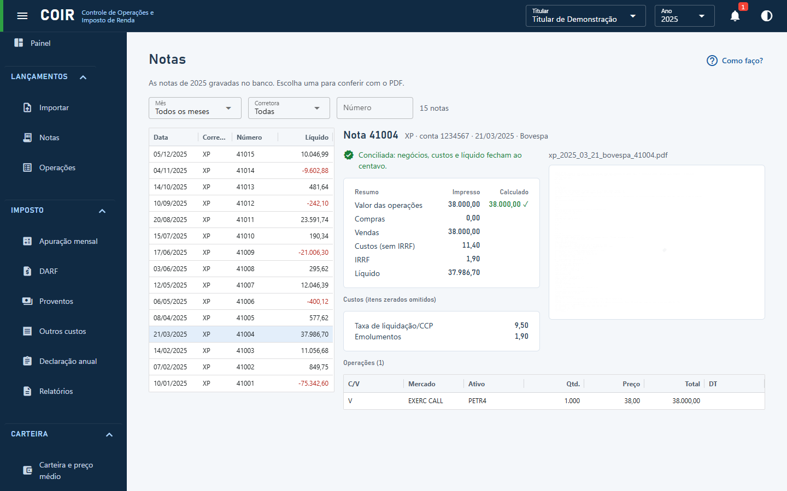

Notas

Lista das notas do ano com filtros por mês, corretora e número. Ao escolher uma nota, o COIR mostra o resumo impresso ao lado do calculado (com a marca de conciliada), os custos, as operações lidas e o PDF original, que pode ser ampliado.
Se a nota foi alterada por um reprocessamento, uma linha mostra a data e o que mudou, e o botão Ver versão anterior abre o que ela dizia antes.
Nota manual
Para a nota que se perdeu, ou de corretora que não dá nota em PDF, use Nova nota manual no topo da tela. Digite a nota como a corretora a imprimiria:
- Cabeçalho: a conta (ou Conta nova..., com a corretora e o número da conta), a data do pregão, o número da nota e o segmento (Bovespa ou BM&F).
- Operações: uma linha para cada negócio.
- Na Bovespa: compra ou venda, mercado, código do ativo, vencimento da opção (MM/AA) ou prazo do termo em dias, quantidade, preço e a marca de day trade.
- Na BM&F: contrato, vencimento, tipo (NORMAL, DAY TRADE ou AJUPOS), quantidade, preço e o valor da linha, com D ou C.
- Custos e IRRF, como estão na nota ou no extrato da corretora. Em branco vale zero.
Conferir totais mostra o valor das operações, os custos e o líquido. Gravar confere a nota do mesmo jeito que as lidas do PDF e faz um backup antes. A nota entra no cálculo com as mesmas regras: day trade, rateio dos custos, IRRF e preço médio. Se a nota deixar alguma operação sem fechar, por exemplo uma venda de ativo que não está na carteira, nada é gravado e o motivo aparece na tela.
Sem número informado, o COIR sugere M1, M2... No mesmo pregão, os negócios de uma nota com letra no número contam depois dos negócios das notas numeradas. Código de ativo que as tabelas não conhecem entra com aviso: confira se foi digitado certo.
Na lista, a nota manual aparece com "(manual)". No detalhe, Corrigir abre o formulário preenchido e Remover a tira do cálculo, depois de pedir confirmação. Nos dois casos, o COIR faz backup e guarda a versão anterior.
Uma nota com o mesmo número, conta e pregão de outra já gravada é recusada. Com outro número, se já houver nota na mesma conta e pregão (do PDF ou manual), o COIR mostra qual é e quantos negócios iguais ela tem, e só grava em Gravar mesmo assim: pode haver duas notas no mesmo pregão, mas pode ser também a mesma nota, que contaria duas vezes. Se achar o PDF da nota manual depois, importe-o e remova a manual; enquanto as duas estiverem gravadas, o COIR avisa na importação e no sino do topo.